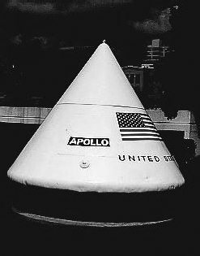
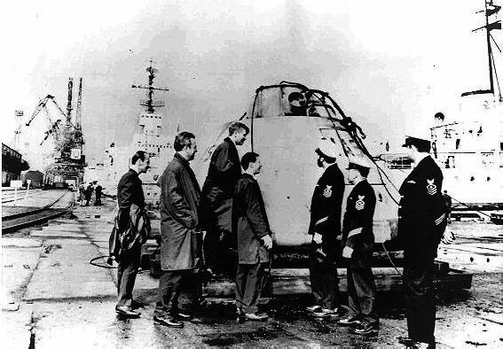
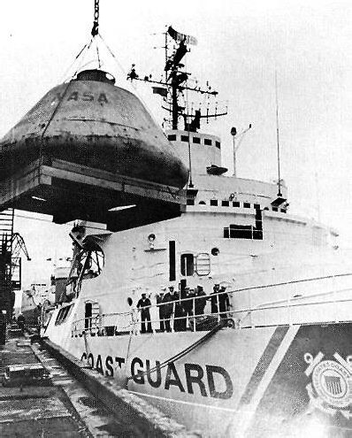
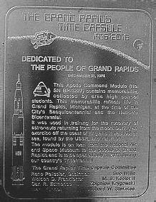

Миссия с несчастливым номером
Между полетом «Аполлона-13» и началом следующей экспедиции на Луну прошел почти год. Специалисты были заняты выяснением причин аварии на межпланетной трассе, а для тех, кто следил за перипетиями американской программы освоения естественного спутника Земли, наступила вынужденная пауза. Чтобы каким-то образом выделить этот период в общем повествовании, я расскажу в этой главе об одной из «русских страниц» программы «Аполлон». Думаю, что это будет вполне уместно сделать именно сейчас.
В небольшом американском городе Гранд-Рапидс в штате Мичиган перед зданием Детройтского национального банка установлен макет командного модуля «Аполлона», как символическая «капсула времени». На мемориальной табличке, помещенной рядом, написано:
Капсула времени Гранд-Рапидса. 1976–2076.
Посвящается людям Гранд-Рапидса.
31 декабря 1976 года.
Этот командный модуль «Аполлона» (серийный номер ВР-1227) содержит памятные вещи, собранные учениками средней школы города. Они отражают нашу жизнь в дни 200-летия независимости США.
Капсула использовалась для тренировок по спасению астронавтов, возвращавшихся с Луны. Она была потеряна у побережья Англии, найдена советскими моряками и возвращена. Капсула передана Национальным авиационно-космическим музеем в аренду жителям Гранд-Рапидса и будет вскрыта 4 июля 2076 года в день 300-летия независимости США.
Такие «посылки в будущее» были достаточно популярны в те годы. И не только в США. Вспомните, например, послания комсомольцам 2017 года, которые были заложены во многих городах нашей страны в преддверии 50-й годовщины Октябрьской революции.
Что конкретно помещено внутрь капсулы в Гранд-Рапидсе, неизвестно. Об этом могли бы рассказать только школьники тех лет, да их учителя, но они предпочитают держать рот на замке. Некоторые скептики полагают, что для потомков содержимое капсулы будет малоинтересно, так как «кроме множества виниловых дисков с записями шведской группы ABBA, там можно будет найти лишь малограмотные каракули, прославляющие Америку». Сознательно привел одно из таких высказываний, не называя его автора. В конце концов, не нам судить американцев. Это их проблемы и их право давать самим себе оценку. У нас своих «тараканов» достаточно и еще неизвестно, что увидят «комсомольцы 2017 года», когда вскроют послания из прошлого.
Судьба командного модуля корабля «Аполлон» ВР-1227, который использовали как капсулу времени, довольно интересна. Благодаря ему советские специалисты смогли воочию увидеть американский корабль для полета к Луне еще до того, как началось потепление в двухсторонних отношениях. А случилось это так.
В начале сентября 1970 года в мурманский порт зашел ледокол Береговой охраны США «Саусвинд» (southwind – южный ветер), совершавший летний круиз по Арктике. Основными задачами рейса было проведение океанографических исследований в Баренцевом и Карском морях, а также пополнение запасов на американских полярных научно-исследовательских станциях. После посещения Гренландии судно направилось на север и достигло 83-й параллели, что на тот момент являлось высшим достижением для американского ледокольного флота.
Следующим пунктом маршрута «Саусвинд» стал Мурманск. Этот визит, ставший первым со времен Второй мировой войны посещением американским военным кораблем советского порта, был довольно неожиданным для экипажа. Когда в июне они покидали родной дом, о заходе в советские территориальные воды и речи не шло. Приказ об изменении курса пришел в конце лета и до поры до времени о нем знал лишь капитан.

Капсула времени
Остается только догадываться, какие ветры перемен подули, пока «Саусвинд» бороздил арктические воды. Не исключено, что решение о посещении Мурманска стало следствием общего улучшения отношений между сверхдержавами, и визит американского военного судна должен был это продемонстрировать. Но, вероятнее, экипажу корабля была поручена вполне конкретная задача, о которой речь пойдет ниже, а словесная риторика стала своеобразным прикрытием для ее выполнения.
«Саусвинд» как нельзя лучше подходил для выполнения возложенной на него миссии. Мало того, что судно оказалось в нужном месте, в нужное время, так еще и судьба корабля оказалась тесно связанной с советскими арктическими водами. «Саусвинд» был введен в строй 15 июля 1944 года, а 25 марта 1945 года по ленд-лизу его передали Советскому Союзу и он пять лет бороздил моря под именем «Капитан Белоусов». Потом его возвратили американцам, и он вошел в состав ВМС США под названием «Атка» (Atka). А 31 октября 1966 года ледокол был передан Береговой охране и обрел свое первоначальное имя – «Саусвинд».
Его переоборудовали под океанографическое судно и направили изучать полярные широты Южного полушария. В первом же плавании случилась крупная неприятность – корабль натолкнулся на айсберг, повредил днище и с большим трудом добрался до порта приписки. Но пробоину залатали, и ледокол вновь вышел в море.
Но вернемся в Мурманск. Когда у американских моряков прошел первый шок, они узнали причину, по которой им пришлось изменить маршрут. В торжественной обстановке 8 сентября экипажу «Саусвинда» был передан макет командного модуля корабля «Аполлон», выловленный в Бискайском заливе советским рыболовным траулером. Это была капсула под номером ВР-1227, потерянная британскими моряками во время тренировки по спасению экипажа космического корабля в случае аварийного приводнения.
Капсулу загрузили в носовую часть судна, после чего оно покинуло Мурманск и продолжило плавание. Посетив норвежские Тромсё и Осло, датский Копенгаген, корабль пришел в британский Портсмут, где модуль ВР-1227 сгрузили и переправили в США.
И хотя ни советская, ни американская сторона не стали делать секрета из факта передачи капсулы, средства массовой информации никак не отреагировали на церемонию в Мурманске. Кроме заинтересованных лиц, единственным свидетелем события стал венгерский журналист Тамаш Фихер (Tamas Feher). Он сделал несколько снимков, один из которых был впоследствии опубликован в энциклопедическом словаре космических исследований «Urhajozasi Lexikon», изданном в Будапеште в 1981 году. Но, повторяю, никакого ажиотажа в те годы вокруг передачи капсулы не было.
Вновь об этом эпизоде вспомнили спустя 32 года, когда венгерский историк Нандор Шумински (Nandor Schuminszky) случайно натолкнулся на фотографию с подписью «Подъем пустой капсулы для морских испытаний “Аполлона” из моря» и попытался установить истину. В этом ему сильно помогла Всемирная паутина. В результате обмена электронными письмами с коллегами из других стран удалось прояснить практически все детали тех давних событий. Откликнулись и моряки с «Саусвинда», которые подтвердили и факт захода судна в Мурманск, и факт передачи капсулы.
Вероятно, здесь можно было бы поставить точку в рассказе об этой малоизвестной странице истории программы «Аполлон», если бы не множество вопросов, которые возникли у исследователей, но так и остались без ответа.
Самый главный вопрос: «Каким образом капсула попала в Советский Союз?».

Капсула «Аполлона» в порту Мурманска
По официальной версии, ее в тумане потеряли моряки британского королевского флота во время тренировки по спасению аварийно приводнившегося экипажа космического корабля. Капсулу подобрал советский траулер, ведший промысел в Бискайском заливе, ну а что с ней случилось дальше, я уже рассказал в этой статье.
Всего в рамках программы «Аполлон» было изготовлено более трех десятков макетов спускаемого аппарата корабля с серийными номерами от ВР-1201 до ВР-1233. Их применяли для тренировки экипажей поисковых судов по всему миру. Известно, что экземпляр с номером ВР-1204 «засветился» на базе в Рота (Испания), с номером ВР-1215 – в японской Йокосуке, с номером ВР-1223 – на Азорских островах, с номером ВР-1227 – в Бискайском заливе. «Биографии» других макетов менее известны. В настоящее время большинство из них находятся в американских музеях, но практически нет данных о том, где они использовались до того, как стали экспонатами.
Однако известно, что американцы старались обеспечить скрытность своих тренировок. Даже макеты, не говоря уж о реальных аппаратах, старались уберечь от постороннего (читай – советского) взгляда. Тем не менее капсула с номером ВР-1227 оказалась в Советском Союзе. Может быть, действительно виноват во всем туман, а может.
Большинство специалистов исключают всякую случайность в истории пропажи капсулы. Они полагают, что эти события стали следствием удачно проведенной спецоперации. Капсулу просто «умыкнули» из-под носа британских моряков для изучения.
Определенная логика в таких рассуждениях есть. В версию о спецоперации нетрудно поверить, если вспомнить, что в годы холодной войны под видом рыболовецких судов в Мировом океане частенько курсировали разведывательные корабли (об этом я уже писал, рассказывая об операции «Перекресток»). Тем более, что велась «лунная гонка» и все, что было так или иначе связано с программой «Аполлон», чрезвычайно интересовало советскую разведку.
Поэтому вполне вероятно, что, ведя наблюдение за интересующим объектом, разведчики воспользовались туманом или оплошностью моряков Королевского флота и «нашли» то, что нас интересовало. А может быть, британцев «заставили» потерять капсулу.
Ходят слухи, что этот инцидент был не единственным, и в руки советских специалистов попали и другие образцы американской космической техники. Якобы, их и сегодня можно увидеть ржавеющими на космических предприятиях в Королеве, Реутове, Самаре.
Не уверен, что это так. Будучи на этих предприятиях и осматривая их «задние дворы», видел всякое. Но ничего хотя бы отдаленно напоминавшего «иноземный мусор» увидеть не смог. Еще один вопрос, которым по сей день задаются специалисты: «Почему советские власти решили возвратить капсулу американцам?».

Передача капсулы представителям американского флота
В том, что капсулу ВР-1227 тщательно изучили, нет сомнений. В этом на страницах журнала «Новости космонавтики» прямо признался один из сотрудников Центрального конструкторского бюро машиностроения А.В. Благов. По его словам, «специалисты ЦКБМ ездили в Мурманск посмотреть на “подарок судьбы”. В общем, это был металлический, очень хорошо сделанный из толстого оцинкованного железа, без следов коррозии, габаритно-весовой макет командного модуля “Аполлон”. Судя по всему, технология изготовления была рассчитана на небольшую серию.
К сожалению, до нас дошел только комплект светового поискового маяка с оригинальной оптической схемой остекления фонаря. Все было предельно просто. Даже теплозащита никак не имитировалась. Мы себе такого [постройки специальной серии кораблей для морских испытаний] позволить не могли.».
Ну а возвратить ее решили, вероятно, по двум причинам.
Во-первых, ничего нового, способного круто изменить отечественную космическую отрасль, увидеть не удалось. Все технологии либо были нашим специалистам известны, либо у нас имелись более прогрессивные технические решения.
А во-вторых, возвращение капсулы можно считать жестом доброй воли, который был способен улучшить отношения между СССР и США. Тем более что эта церемония была проведена уже после того, как Армстронг и Олдрин прогулялись по Луне, а советская лунная программа была близка к закрытию.
Иногда в качестве причины возврата капсулы называют стремление советской разведки утереть нос американским конкурентам и продемонстрировать свои возможности по добыванию секретов противной стороны. Но это вряд ли. Обычно разведчики о таких вещах не распространяются, а если демонстрируют свой потенциал, то только во имя более крупной цели. В данном случае такой «крупной цели» не просматривается.
Еще один вопрос: «Знали ли американцы, что капсула попала в руки советских моряков или предложение забрать свою технику оказалось для них неожиданным?».
Судя по всему, до последнего момента они были уверены, что ВР-1227 покоится на дне Бискайского залива. Лишь незадолго до прибытия «Саусвуинда» в Мурманск по дипломатическим каналам им сообщили истину.
Скандал в Вашингтоне был грандиозный. Не исключено, что именно по этой причине ушел в отставку тогдашний директор НАСА Томас Пейн. Она последовала 15 сентября 1970 года, то есть ровно через неделю после торжественной церемонии передачи капсулы. И хотя официальная мотивировка отставки озвучивалась иная, это могли быть связанные между собой вещи. Иначе зачем покидать столь высокий пост человеку, который возглавлял аэрокосмическое агентство США в период его «звездного часа»? Зачем уходить в отставку чиновнику, ставшему одним из инициаторов организации советско-американского пилотируемого космического полета, переговоры о котором должны были начаться в октябре? Так что, скорее всего, уход Пейна был вынужденным.

Памятная табличка на фасаде банка в Гранд-Рапидсе
Есть еще одно предположение, связанное с отставкой директора НАСА. Некоторые считают, что передачей капсулы Советский Союз «поспособствовал» смещению Пейна, который, по каким-то причинам, был «неугодной» фигурой в начинавшемся советско-американском сотрудничестве в космосе.
Есть в этой истории и другие странности, но они не столь интересны, поэтому я не буду акцентировать на них внимание читателей. Добавлю только, что документы о событиях, которые предшествовали церемонии в Мурманске, должны быть рассекречены в 2021 году. Правда, если не будет принято решение продлить «срок давности».
И еще два слова о судьбе капсулы под номером ВР-1227. После завершения программы «Аполлон», ее передали в Национальный авиационно-космический музей в Вашингтоне, откуда капсулу взяли в аренду власти города Гранд-Рапидс. В ближайшие семьдесят лет ее можно будет увидеть именно там. Ну а куда она отправится после 2076 года, узнают наши потомки.